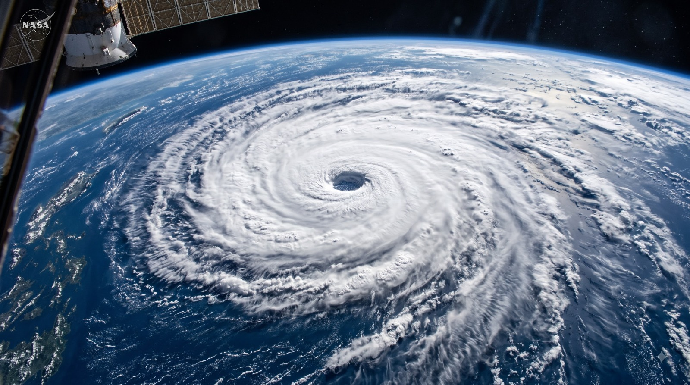
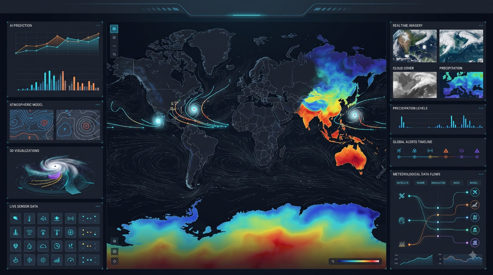

Need Help?
Quick Emergency Actions
If you or someone near you is in danger during a cyclone, use these shortcuts to request help or reach the right helpline fast.
CycloTrack India brings live tracking, a region-by-region risk map, and a 50-year historical archive of major cyclones into one dashboard — built for SIH 2026 by Team Nexus.
If you or someone near you is in danger during a cyclone, use these shortcuts to request help or reach the right helpline fast.
National numbers to call in a cyclone emergency. Tap any number to call from your mobile.
A reference satellite photograph of a mature tropical cyclone, the same kind of imagery CycloTrack India's monitoring pipeline watches for storm formation over the Bay of Bengal.

Image credit: NASA
Three modules, all pulling from the same cyclone archive — pick a card to jump straight in.
An interactive 2D/3D India map with 7 coastal regions, risk filters, and a synced risk-profile panel.
Open Region Map →A decade-by-decade timeline of 10 major cyclones, with era filters and full impact stats.
Open Timeline →The problem, the approach, the tech stack, and the team behind CycloTrack India.
Meet Team Nexus →A look at the live tracking, AI prediction, and sensor-data panels that feed CycloTrack India's regional risk scores.

India's coastline sees some of the most destructive cyclones on Earth, but the data behind them is usually scattered.
Coastal communities, planners, and researchers often have to piece together cyclone risk from multiple sources — IMD bulletins, historical news archives, and static reports — with no single place to see a region's risk, a storm's history, and live tracking together.
CycloTrack India brings live tracking, a region-by-region risk map, and a 50-year historical archive into one dashboard, so anyone can see a coastal region's exposure and its landfall history side by side.
Title, region, and reason for each — the full record with damage figures lives on the History page.
| Title | Year | Region | Category | Reason |
|---|---|---|---|---|
| Cyclone Amphan | 2020 | West Bengal, Odisha | Cat 5 | Rapid intensification over a Bay of Bengal warm core |
| Cyclone Fani | 2019 | Odisha | Cat 4 | Extremely severe cyclonic storm under low wind shear |
| Cyclone Hudhud | 2014 | Andhra Pradesh | Cat 4 | High sea surface temperature anomaly |
| Cyclone Nisarga | 2020 | Maharashtra | Cat 2 | Rare Arabian Sea landfalling system |
| Odisha Super Cyclone | 1999 | Odisha | Cat 5 | Category 5 equivalent intensity, prolonged landfall |
| Cyclone Phailin | 2013 | Odisha, Andhra Pradesh | Cat 4 | Very severe cyclonic storm, favorable ocean heat content |
| Andhra Cyclone | 1996 | Andhra Pradesh | Cat 3 | Delta flooding from a slow-moving landfall |
| Andhra Pradesh Cyclone | 1990 | Andhra Pradesh | Cat 3 | Severe cyclonic storm with a storm surge above 3m |
| Andhra Pradesh Cyclone | 1977 | Andhra Pradesh | Cat 5 | Category 5 equivalent, direct hit on a low-lying delta |
| Odisha Cyclone | 1971 | Odisha | Cat 4 | Very severe cyclonic storm, limited early warning |